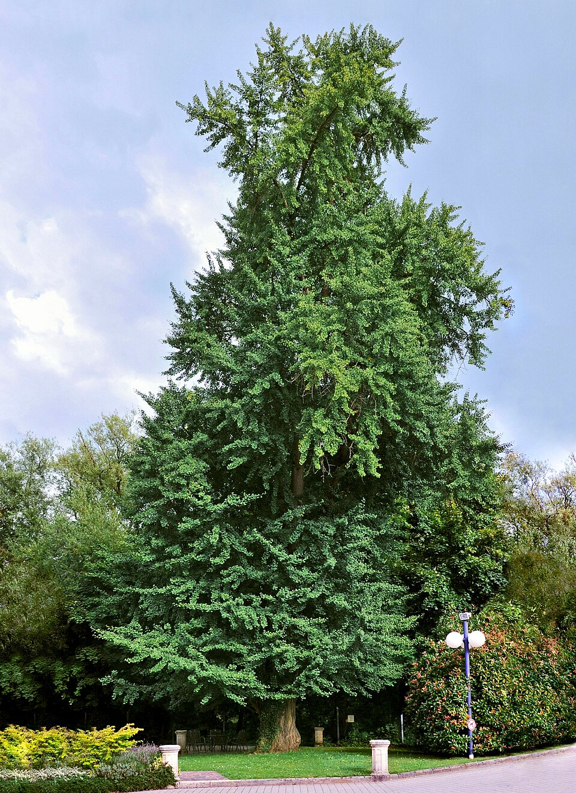
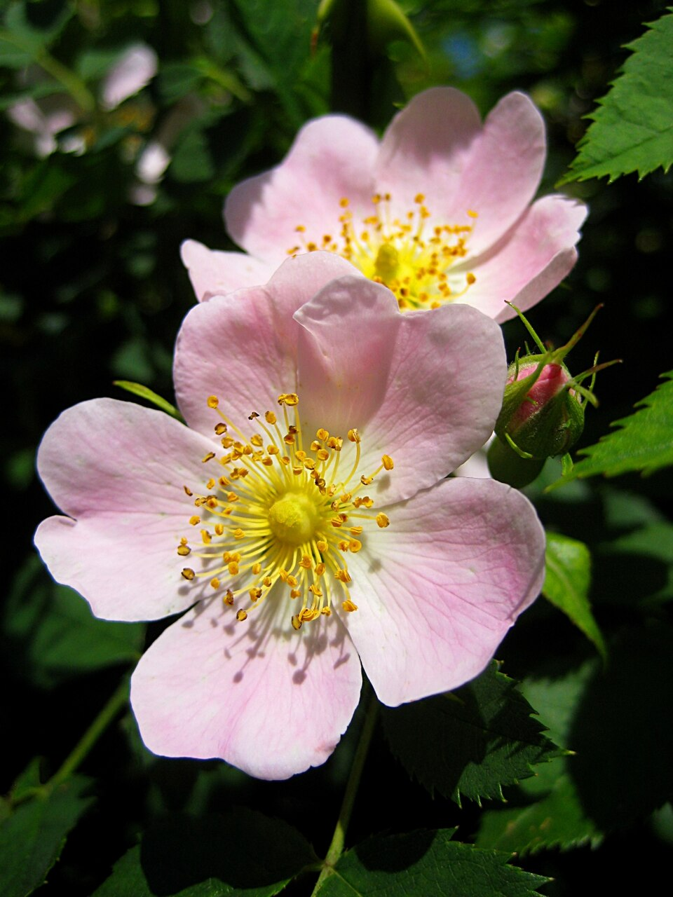

FunBox 识花草 · 产品设计 V1
拍一张照片，认识眼前的植物：名称、科属、描述与食用提示
PlantNet 识别、GBIF 分类、iNaturalist 图片与观察、Wikipedia 描述，字段级标注来源与抓取时间。
双入口识别、候选结果、详情聚合、历史记录、纠错反馈与数据来源页在同一版本交付。
食用/毒性信息只展示可引用原文；资料缺失一律提示“请勿采食”，不输出无依据判断。
名称、科属、常见描述与食用提示，均来自真实数据源。

银杏 银杏科 · Ginkgo biloba
蔷薇属 蔷薇科 · Rosa01 识别首页 · 双入口 + 最近识别 + 常见植物
02 相机识别 · 取景 + 拍摄 + 分析态
03 识别结果 · 主结果 + 候选列表 + 置信度
Helianthus annuus
维基百科词条记载：因用其果实榨取的食用油和果实具备较高经济价值，而被认为是一种经济作物；葵花籽可作为食材与榨油原料。
向日葵是一种大型菊科向日葵属植物。因用其果实榨取的食用油和果实具备较高经济价值，而被认为是一种经济作物。该植物最早是在美洲被人类驯化。
04 物种详情 · 六层信息 + 食用提示 + 来源
拍一棵植物，记录会保存在这里。
05 识别历史 · 记录 + 删除 + 空态
DESIGN NOTES
识别不止回答“是什么”：从候选结果到详情页，六层信息全部来自真实数据源，缺失字段不补造。
| 场景 | 处理 |
|---|---|
| 置信度 < 60% | 提示重拍，候选列表继续可查 |
| 词条缺失 | 显示“暂无”，不补造内容 |
| 识别服务失败 | 明确提示 + 重试，不出占位物种 |
| 图片 404 | 占位“图片整理中”，文字资料照常 |